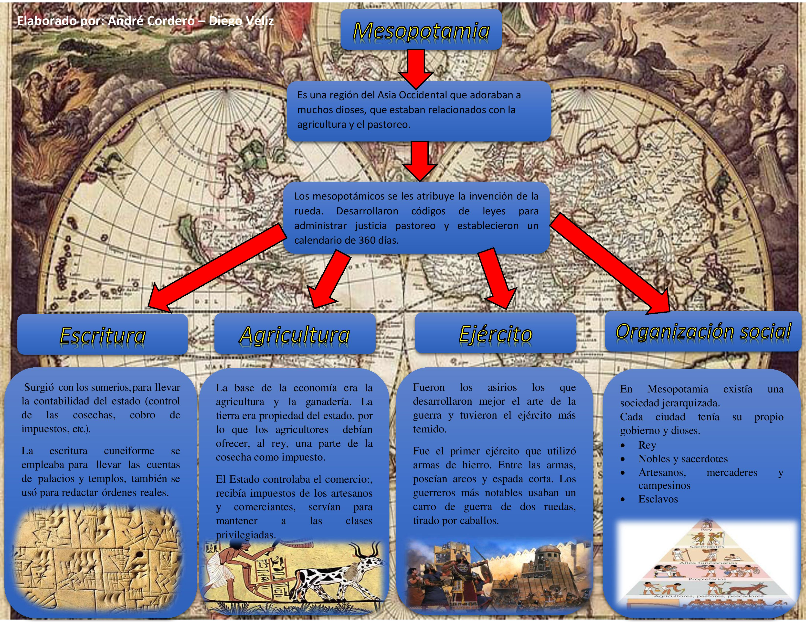

Unidad # 1 de Estudios Sociales
Las civilizaciones de Oriente
A partir del IV milenio a. C. fue el otro factor determinante para el nacimiento de las civilizaciones en el Oriente. En la mayor parte de Europa se tardó más en trabajar el metal, y fue introducido en un momento en que algunas civilizaciones, como la egipcia o la mesopotámica, ya conocían la escritura.
Impacto de los metales
• La mejora de las técnicas agrícolas a través de nuevas herramientas incrementó
la producción de alimentos, la acumulación de excedentes y su intercambio por otros alimentos y metales.
• Nuevas herramientas también permitieron el desarrollo de la industria naval ycon ello el incremento exponencial de los intercambios comerciales y de las campañas de conquista de nuevos territorios.
• La especialización del trabajo se amplió al oficio de herrero, que fabricaba las armas y herramientas. Esto también impactó en oficios como el de comerciante, que empezó a transar objetos metálicos, y en el de agricultor, que debía manipular herramientas más pesadas.
Resumen elaborado en un mapa conceputal

Mesopotamia
Alrededor del IV milenio a. C., las sociedades ubicadas en el Creciente Fértil se desarrollaron y crecieron gracias a la agricultura intensiva y al uso de metales. Estos cambios llevaron al aparecimiento de las primeras civilizaciones
 Mesopotamia es una palabra griega que significa ‘tierra entre ríos’. Los griegos denominaron así a una región de Oriente Medio situada entre los ríos Tigris y Éufrates, en el actual Medio Oriente. Allí, las inundaciones periódicas generaban problemas y, por ello, la población desarrolló técnicas para evitar que el agua anegara zonas cultivadas y pobladas. Se crearon sistemas de drenaje, diques y canales.
Mesopotamia es una palabra griega que significa ‘tierra entre ríos’. Los griegos denominaron así a una región de Oriente Medio situada entre los ríos Tigris y Éufrates, en el actual Medio Oriente. Allí, las inundaciones periódicas generaban problemas y, por ello, la población desarrolló técnicas para evitar que el agua anegara zonas cultivadas y pobladas. Se crearon sistemas de drenaje, diques y canales.
Las mejoras técnicas permitieron tener un excedente agrícola; ahora se podía comercializar, lo que también implicó un crecimiento poblacional.
 De toda Mesopotamia, fueron los asirios los que desarrollaron mejor el arte de la guerra y tuvieron el ejército más temido hasta la aparición de las falanges macedónicas ylas legiones romanas. Fue el primer ejército que utilizó armas de hierro. La infantería, conformada por arqueros y piqueros, usaba como indumentaria una coraza de cuero, un casco de metal y un escudo redondo.
De toda Mesopotamia, fueron los asirios los que desarrollaron mejor el arte de la guerra y tuvieron el ejército más temido hasta la aparición de las falanges macedónicas ylas legiones romanas. Fue el primer ejército que utilizó armas de hierro. La infantería, conformada por arqueros y piqueros, usaba como indumentaria una coraza de cuero, un casco de metal y un escudo redondo.
Entre las armas, poseían arcos y flechas cortas, lanza y espada corta. Tenían caballería y los guerreros más notables usaban un carro de guerra de dos ruedas, tirado por dos o tres caballos. También tenían artefactos para derribar murallas, y torres para superar las cercas enemigas.
Resumen elaborado en un mapa conceputal
Egipto
En el V milenio a. C., la población del norte de África se concentró en las orillas del río Nilo, donde poco a poco, se fue creando una gran civilización. El Nilo posibilitaba la agricultura y la ganadería, bases de la economía egipcia. Las inundaciones anuales dejaban una capa de limo negro que fertilizaba el suelo.
Al igual que en Mesopotamia, la primera escritura conocida en Egipto fue pictográfica. Posteriormente, evolucionó como la cuneiforme, pero, en lugar de ser esquemática, adoptó una forma más compleja. La conocemos como escritura jeroglífica.
Cuando los jeroglíficos se inscribían o pintaban en los muros de los edificios o en estatuas, eran sagrados; en este caso, tenían una
gran perfección artística,los símbolos se dibujaban más rápidamente y con menos cuidado, lo que dio lugar a un tipo de escritura popular,denominada demótica.
Resumen elaborado en un mapa conceputal

Hebreos y fenicios
Los hebreos
 Los hebreos eran un conjunto de tribus de pastores seminómadas con una organización patriarcal, es decir, la autoridad residía en el cabeza de la familia y de la tribu (patriarca).
Los hebreos eran un conjunto de tribus de pastores seminómadas con una organización patriarcal, es decir, la autoridad residía en el cabeza de la familia y de la tribu (patriarca).
Los hebreos, que hoy son conocidos como judíos, eran monoteístas, es decir, creían en un dios único. Su religión influyó en el cristianismo y el islam.
Sus textos sagrados son la Torá, que es la palabra revelada por Dios, y el Talmud, una recopilación de escritos con las normas que rigen la vida cotidiana.
Los fenicios
 Los fenicios eran un pueblo establecido en la costa oriental del mar Mediterráneo, que creó una importante cultura entre el año 1500 a. C. y el siglo IV a. C., cuando Alejandro Magno conquistó el territorio que ocupaban
Los fenicios eran un pueblo establecido en la costa oriental del mar Mediterráneo, que creó una importante cultura entre el año 1500 a. C. y el siglo IV a. C., cuando Alejandro Magno conquistó el territorio que ocupaban
La mayor aportación de los fenicios a la cultura occidental fue la creación de un alfabeto. Cada símbolo correspondía a un sonido, por lo que con solo veintidós símbolos podían escribir cualquier palabra.
Resumen elaborado en un mapa conceputal
China
El territorio chino ha sido agrícola por excelencia, pues cuenta con importantes ríos (Huang-Ho, Yang-Tsé-Kiang y Si-Kiang), y constantes lluvias, provocadas por los vientos monzones, que mantienen inundadas grandes extensiones de terreno.
Esas características del clima han creado condiciones idóneas para el cultivo de arroz, y de otros cereales y verduras. En este contexto, varios pequeños estados culturalmente similares que con frecuencia entraban en guerra por el dominio de la zona, pero también enfrentaban enemigos externos más lejanos atraídos por sus riquezas, se aliaron a finales del siglo II a. C., lo que dio origen al Imperio chino y a su primera dinastía
Agricultura
La principal actividad y base de la civilización fue la agricultura. La agricultura era de subsistencia, es decir, poco lo que se compraba o vendía. Además, la distribución de la tierra tendía a ser desigual.
Resumen elaborado en un mapa conceputal
India
En la cordillera del Himalaya, en el centro sur de Asia, nacen los ríos Ganges e Indo, que convierten un extenso territorio, conocido como la península del Decán, en una región propicia para la agricultura. Tres mil años antes de Cristo, el pueblo de los drávidas, que ya contaba con cierto grado de civilización, habitaba la península.

Características de la antigua India
1. La sociedad era patriarcal y teocrática. El gobernante también era sacerdote, y gobernaba ennombre de la divinidad.
2. Desarrollaron las matemáticas y usaron la cifra cero como valor nulo. Los conocimientos matemáticos de los indios fueron transmitidos a Occidente por los árabes.
3. Hacia el año 7000 a. C., elaboraron ladrillos rudimentarios, y hacia el siglo IV a. C., les dieron consistencia de cerámica.
Resumen elaborado en un mapa conceputal